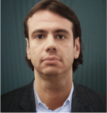

Valentin Rakovic
Position: Associate professor
Email: valentin@feit.ukim.edu.mk
Telephone: +38923099112
About me
I am an Associate Professor at the Faculty of Electrical Engineering and Information Technologies, Ss Cyril and Methodius University in Skopje. I am also the head of the Laboratory for Wireless and Mobile Networks. During 2019, I worked as a visiting Research Faculty in the College of Computing at Georgia Institute of Technology, GA, USA. I have has been part of multiple national and regional projects, as well as 10+ internationally funded research projects funded by the European Union and NATO. I have coauthored more than 80 publications in established international conferences and journals. My current research interests include wireless networks, signal processing, optimization theory, machine learning, and prototyping of wireless networking solutions. My most recent research activities and interests focus on the synergy between wireless communications and distributed learning, application of Federated Learning in IoT, as well as statistical learning theory for distributed and high-dimensional systems.
I am the youngest recipient of the Ss Cyril and Methodius award and am also the recipient of several international awards, most proud of the IEEE DySPAN best demo award in 2011 and 2015.
Education
- 2016: Received PhD degree in Electrical Engineering and Information Technologies at Ss Cyril and Methodius University, Skopje, N. Macedonia / with joint supervision from RWTH Aachen, Aachen, Germany
- 2010: Received Master degree in Wireless and mobile communications from Ss Cyril and Methodius University, Institute of Telecommunications at Faculty of Electrical Engineering and Information Technologies, Skopje, Macedonia
- 2008: Received Bachelor degree in Telecommunications from Ss Cyril and Methodius University, Faculty of Electrical Engineering and Information Technologies, Skopje, Macedonia
Research interests
- Wireless Communications and Networks
- Machine Learning
- Distributed Learning
- Signal processing
- Mobile Edge Computing
- Prototype Development of Computer Communication systems
- Optimiztion Theory
- Information Therory
- Statistical Learning Theory
Skills
- MATLAB, CVX, Yalmip
- GnuRadio, UHD
- Linux, OpenStack, Docker, Kubernetes
- Python, Tensorflow, PyTorch, Flower
- Java, Spring
- C, C++, C#
- PHP, JScrip, Angular, React
- SQL, MySQL, MongoDB
- Qualnet, Opnet, Omnet++
- IOS, JUNOS, PANOS
Awards and recognitions
- IEEE Reg 8 Student Paper Competition 3rd prize (in the role of supervisor)
- IEEE N. Macedonia Sectition Student Paper Competition 1st and 3rd place (in the role of supervisor)
- Ss. Cyril and Methodius Award 2016 (Lifetime award and youngest recipient)
- Best Demo Award at IEEE DySpan 2015. Coauthor of the awarded demo paper:”REM-facilitated Smart WiFi”
- Best Demo Award at IEEE DySpan 2011. Coauthor of the awarded demo paper:Constructing Radio Environment Maps with Heterogeneous Spectrum Sensors”
- Best paper award (Runner-up/Honorable mention) at EAI SIMUTOOLS 2010
- Best Student Paper Award at TELFOR 2008
Recent Publications
- M. Marinova and V. Rakovic, "Accelerating Convergence in Split Learning for Time-Varying and Resource-Limited Environments," 2024 IEEE 22nd Mediterranean Electrotechnical Conference (MELECON), Porto, Portugal, 2024, pp. 13-18, doi: 10.1109/MELECON56669.2024.10608579.
- M. Poposka, V. Rakovic, D. Denkovski, H. Gjoreski and Z. Hadzi-Velkov, "Design Optimization of RF Energy Harvesting Networks for Federated Learning," 2024 7th International Balkan Conference on Communications and Networking (BalkanCom), Ljubljana, Slovenia, 2024, pp. 58-62, doi: 10.1109/BalkanCom61808.2024.10557202.
- M. Poposka, S. Pejoski, V. Rakovic, D. Denkovski, H. Gjoreski and Z. Hadzi-Velkov, "Delay Minimization of Federated Learning Over Wireless Powered Communication Networks," in IEEE Communications Letters, doi: 10.1109/LCOMM.2023.3337320.
- S .Pavleska, V. Rakovic, D. Denkovski, H. Gjoreski, “Split Learning for Human Activity Recognition” in Handbook of Neural Engineering, Volume 1: Signal Processing Strategies, Elsevier, 2024 (to appear)
- S. Kalabakov, B. Jovanovski, H. Gjoreski, V. Rakovic, D. Denkovski, B. Pfitzner, O. Konak, B. Arnrich “Federated Learning for Activity Recognition: A System Level Perspective,” in IEEE Access, vol. 11, pp. 64442-64457, 2023.
- M. Poposka, B. Jovanovski, V. Rakovic, D. Denkovski and Z. Hadzi-Velkov, “Resource Allocation of NOMA Communication Systems for Federated Learning,” in IEEE Communications Letters, vol. 27, no. 8, pp. 2108-2112, Aug. 2023.
- A. Cholakoska, B. Pfitzner, H. Gjoreski, V. Rakovic, D. Denkovski, B. Arnrich, M. Kalendar, “Federated Learning for Network Intrusion Detection in Ambient Assisted Living Environments,” IEEE Internet Computing, vol. 27, no. 4, pp. 15-22, July-Aug. 2023.
- B. Sazdov, M. Tashkovska, S. Krsteski, B. Jovanovski, S. Kalabakov, V. Rakovic, D. Denkovski, H. Gjoreski, “Prediction of Hospital Readmission using Federated Learning,” 30th International Conference on Systems, Signals and Image Processing (IWSSIP), Ohrid, North Macedonia, 2023, pp. 1-5.
- V. Rakovic. K.J. Hsu, K. Bhardwaj, A. Gavrilovska, L. Gavrilovska, “ShapeShifter: Resolving the Hidden Latency Contention Problem in MEC”, ACM/IEEE Symposium on Edge Computing, Seattle, USA, 2022.
Hobbies
In my spare time I am an avid cyclist, beginner runner, hoppless optimist in chess, and "retired" musician.
|